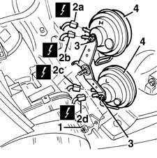
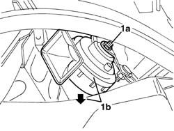

5550B30 L/H OR R/H HORN (ONE) - R+R
- Path
- Procedures > 55 ELECTRICAL EQUIPMENT > 5550 WARNING AND MANOEUVRING INDICATORS > 5550B HORNS > 5550B30 L/H OR R/H HORN (ONE) - R+R
- Kind
- repair procedure (removal / refitting; the operation number is the code)
- Applies to
- all engines; all production periods
- Interactive page
- https://sloeber94.github.io/elrnDB-fMltpl/en/#/2891945
Applies to: all engines; production: fino a 05/99, da 09/03, da 06/99 a 03/02, da 04/02 a 08/03, fino a 05/04
 Removing
Removing
 Refitting
RefittingOpen the bonnet lid.
1. Undo the nut fixing the bracket for the horns (only for removing the lower horn).
2. Disconnect the electrical connections for the horn (2a, 2b, 2c, 2d).
 | Name | Connector |
|---|---|---|
2a | High-tone horn | See P10A HIGH-TONE HORN ( FRONT ) |
| Name | Connector |
|---|---|---|
2b | High-tone horn | See P10B HIGH-TONE HORN ( FRONT ) |
| Name | Connector |
|---|---|---|
2c | Horn | See P11A HORN ( FRONT ) |
| Name | Connector |
|---|---|---|
2d | Horn | See P11B HORN ( FRONT ) |
3. Undo the nut.
4. Remove the horn.

Applies to: all engines; production: fino a 05/99, da 09/03, da 06/99 a 03/02, da 04/02 a 08/03, fino a 05/04
Refitting
RemovingCheck that the horns are not damaged and test their operation.
Refit the horn fixing it using the nut.
Connect the electrical connections.
Tighten the bolt fixing the bracket for the horns (only for refitting the lower horn).
Test the operation of the horns.
Applies to: all engines; production: da 06/04
Removing
Refitting- Working under the left front headlight, undo the nut (1a) and move the horn (1b).

Applies to: all engines; production: da 06/04
- Disconnect the electrical connections (1a and 1b).
- Keep the horn.
Applies to: all engines; production: da 06/04
Refitting
Removing- Check that the horn is not damaged and check that it is working properly.
- Connect the electrical connections.
- Position the horn and secure it using the nut.
- Check that the horn is working properly.
- Op. 7055B10 LH OR RH REFLECTOR(ONE) ON REAR BUMPERS - R R